Faça manteigas corporais, óleos labiais, sabonetes batidos e sais de banho na sua cozinha. 206 receitas passo a passo, escritas para quem nunca fez nada.
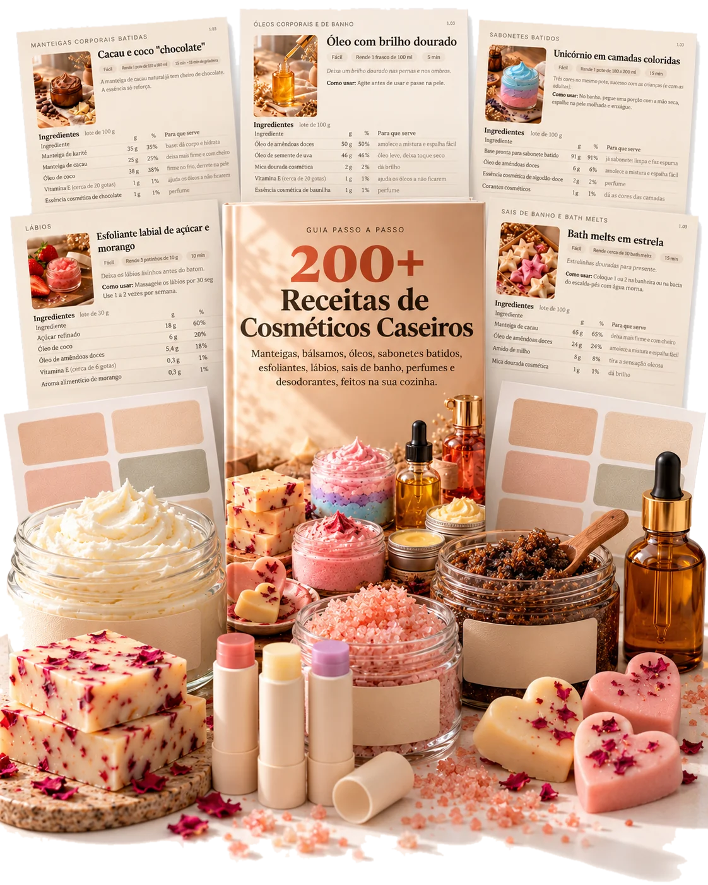
São 206 receitas de cosméticos caseiros com quantidades exatas e passo a passo.
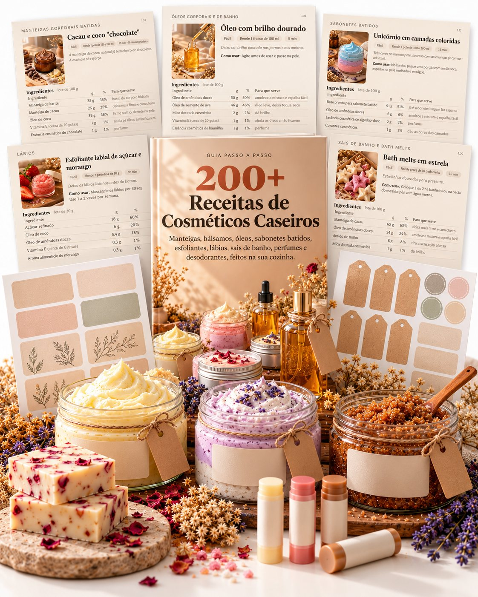
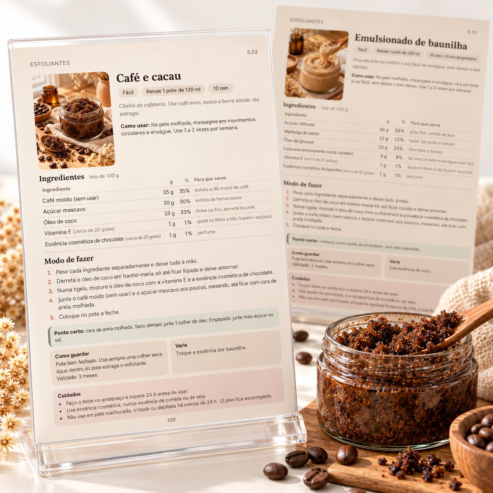
Veja como fica pronto, separe os ingredientes exatos e siga o passo a passo. Tudo o que você precisa para fazer uma receita está numa ficha só.
Quatro coleções, organizadas pelo que você quer fazer.
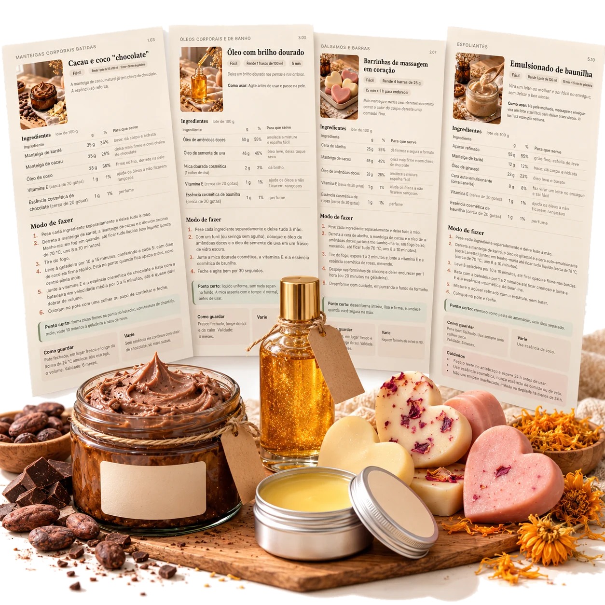
Manteigas batidas, bálsamos para o dia a dia, barras hidratantes e barras de massagem para fazer em qualquer época do ano.
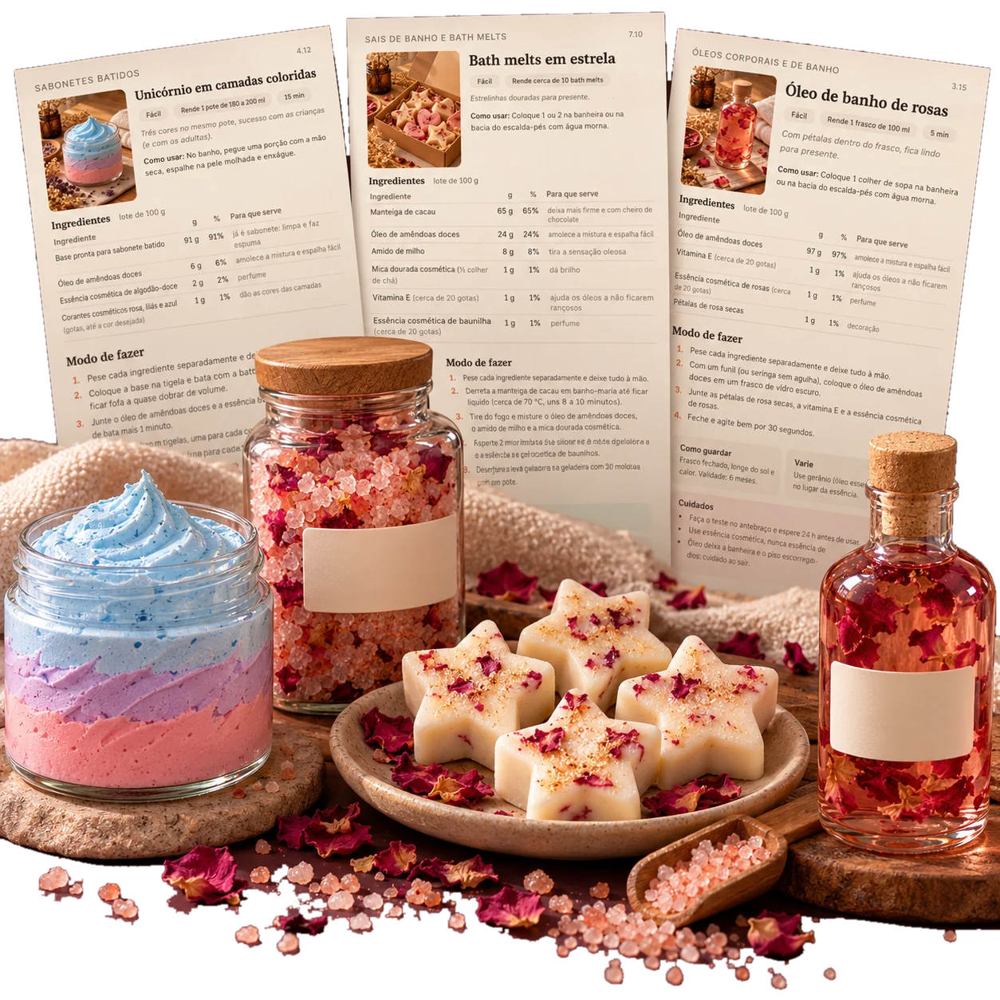
Sais de banho, bath melts e trufas de banho, além de óleos corporais e de banho para noites tranquilas e presentes fáceis.
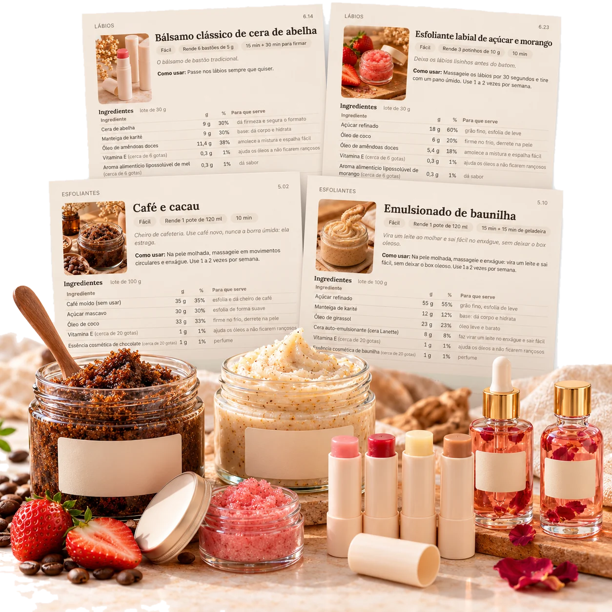
Esfoliantes de açúcar e de café, sabonetes batidos, bálsamos e óleos labiais, em três coleções.
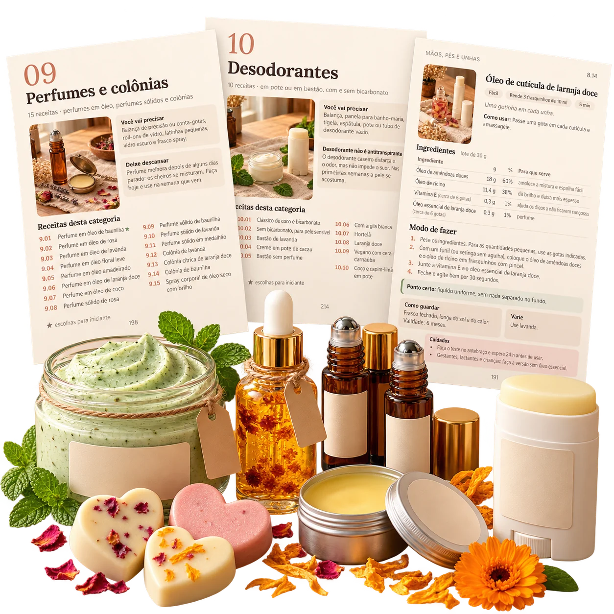
Cuidados para mãos e pés, óleos de cutícula, perfumes e desodorantes para completar a sua prateleira.
Junto com as receitas você recebe 4 bônus, grátis em todo pedido.
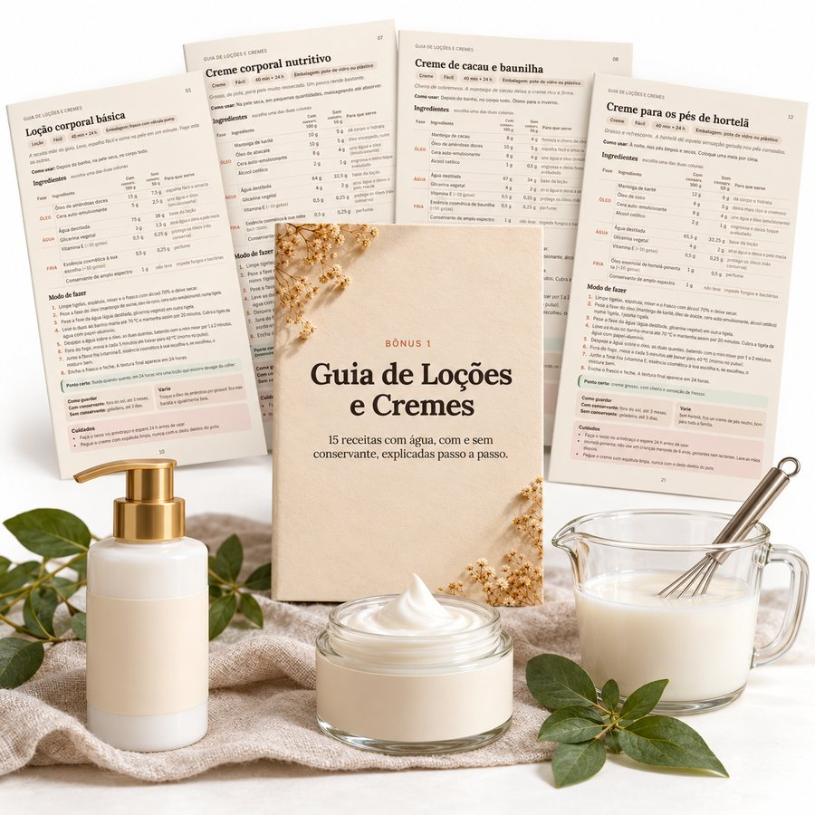
Bônus #1 · Grátis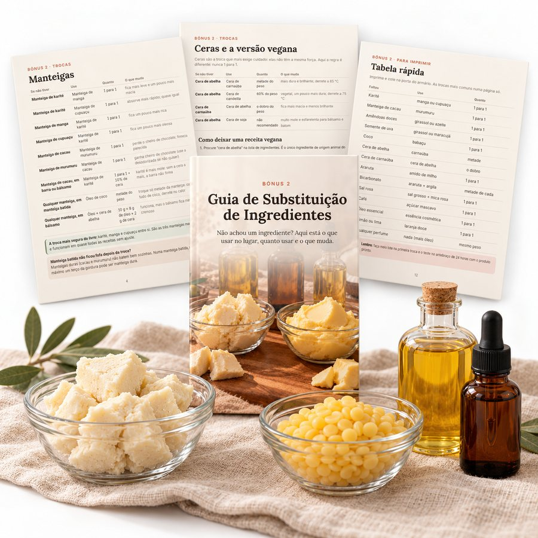
Bônus #2 · Grátis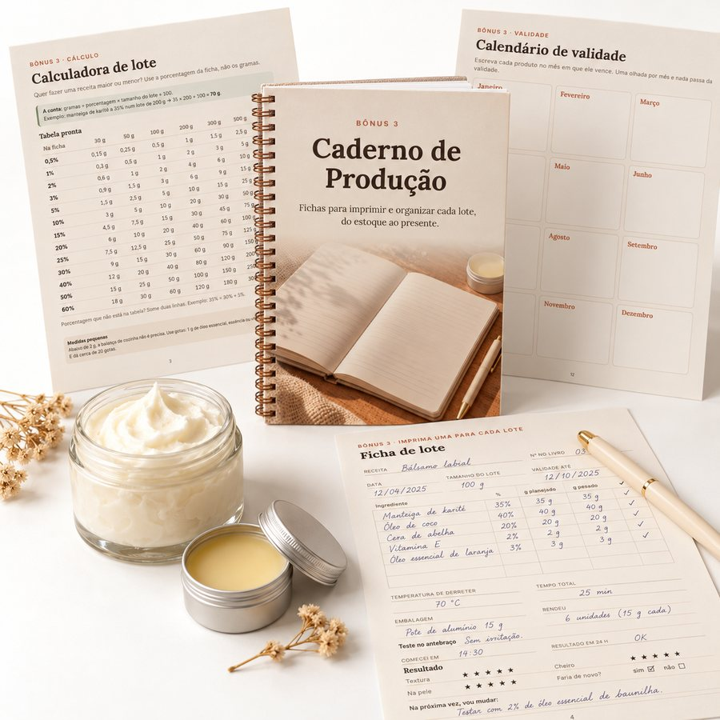
Bônus #3 · Grátis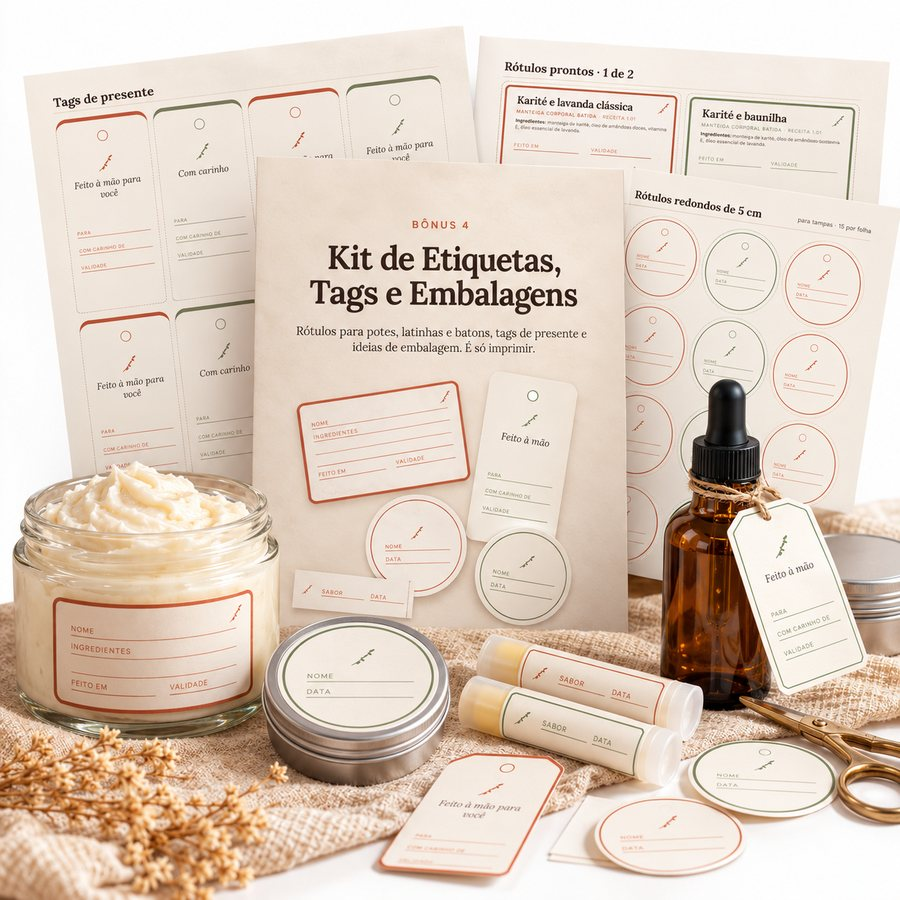
Bônus #4 · GrátisAssim que o pagamento for aprovado, as 206 receitas chegam no seu e-mail em PDF. Abra no celular, no tablet ou no computador.
Abra o guia e escolha o que quer fazer primeiro: uma manteiga batida, um óleo labial, um esfoliante simples. Se nunca fez nada, comece pelas 10 escolhas para iniciante.
Siga o passo a passo, misture e ajuste o cheiro e a textura do seu jeito.
Consegue. As receitas foram escritas para quem está começando, com quantidade exata e cada etapa explicada. Se quiser ir com calma, comece pelas 10 escolhas para iniciante.
Em lojas de produtos naturais, de saboaria e em sites como Mercado Livre e Shopee. Manteiga de karité, óleo de coco, óleo de amêndoas e cera de abelha são fáceis de achar.
Não. Uma balança de cozinha, uma tigela de vidro, uma panela para banho-maria, uma batedeira de mão e potes. Um termômetro de cozinha ajuda, mas não é obrigatório.
Tem opções sem perfume em quase todas as categorias. Antes de usar qualquer receita, faça o teste no antebraço e espere 24 horas. Se você tem algum problema de pele, converse com seu dermatologista.
Use as versões sem óleo essencial e converse com o seu médico antes.
Manteigas, bálsamos e óleos duram até 6 meses. Esfoliantes, até 3 meses. Cada ficha traz a validade e como guardar.
No seu e-mail, logo depois da aprovação do pagamento. Pix e cartão aprovam na hora.
Você tem 7 dias de garantia. É só pedir e devolvemos 100% do valor.
Baixe, abra e faça a sua primeira receita. Se em 7 dias você achar que não é para você, é só mandar um e-mail que devolvemos todo o seu dinheiro. Sem perguntas.